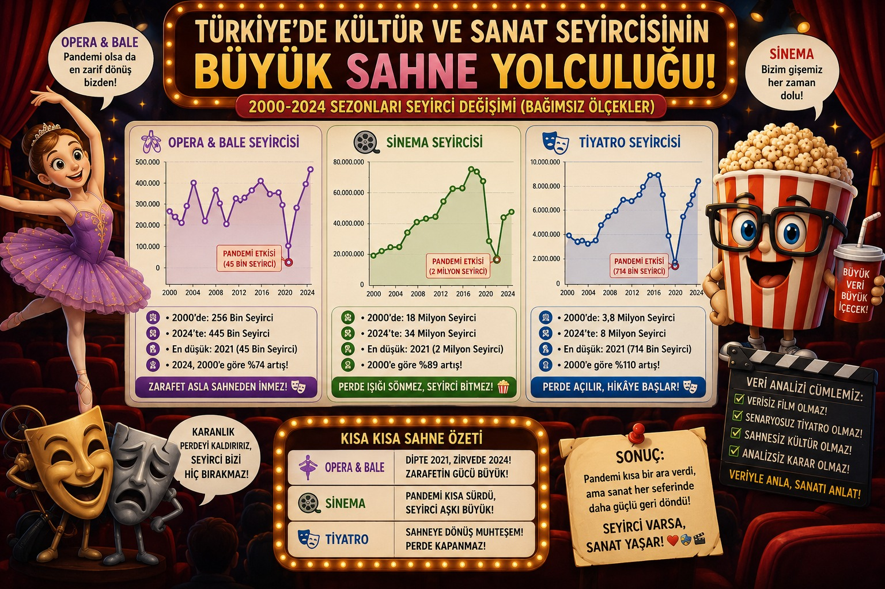
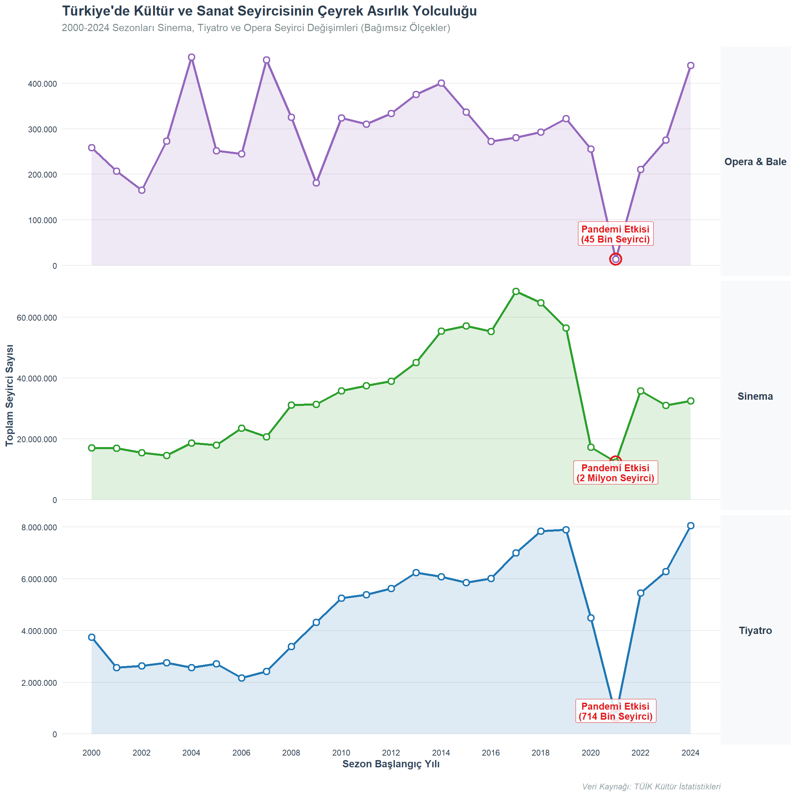
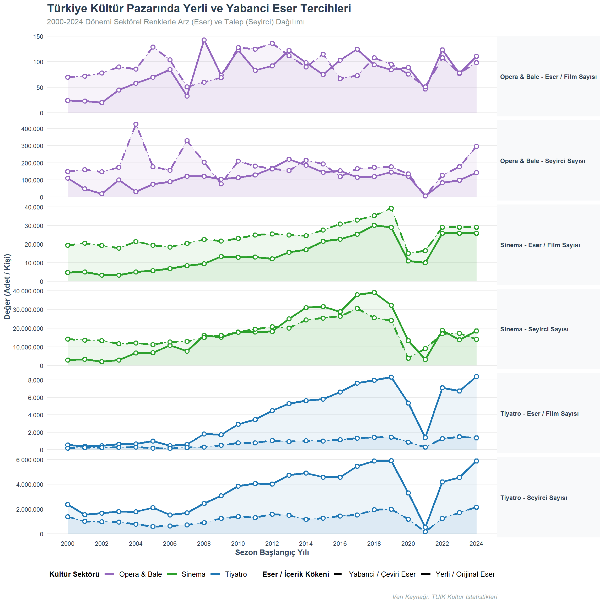
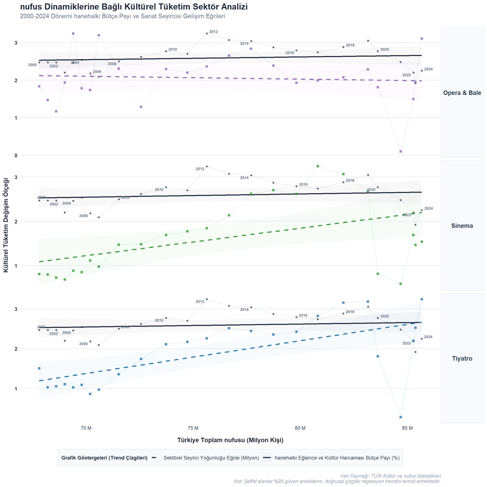

| Sira | Veri_Seti | Kaynak | Veri_Tipi | Yapisal_Rol |
|---|---|---|---|---|
| 1 | Sezon Yilina Gore Tiyatro Salonu, Oynanan Eser ve Seyirci Sayisi | TUIK (Kultur Istatistikleri) | Sayisal (Yillik/Sezon) | Bagimli Degisken (Analiz Edilen Temel Trend) |
| 2 | Opera ve Bale Salonu, Koltuk, Oynanan Eser ve Seyirci Sayisi | TUIK (Kultur Istatistikleri) | Sayisal (Yillik) | Karsilastirmali Degisken (Nis Sanat Dali Trendi) |
| 3 | Sinema Gosterilen Film ve Seyirci Sayisi | TUIK (Kultur Istatistikleri) | Sayisal (Yillik) | Karsilastirmali Degisken (Kitlesel Eglence Trendi) |
| 4 | Hanehalki Tuketim Harcamasinin Turlerine Gore Dagilimi | TUIK (Gelir ve Yasam Kosullari) | Yuzde (%) | Bagimsiz Degisken (Ekonomik Butce/Refah Etkisi) |
| 5 | Cinsiyete Gore Nufus | TUIK (ADNKS / Nufus Projeksiyonlari) | Sayisal (Yillik) | Kontrol Değiskeni (Kisi Basina Oranlama Matrisi) |
ALKIŞ ANALİTİĞİ - VERİLERLE TÜRKİYE’NİN SAHNE YOLCULUĞU

1 👥 FOUR CORNERS 👥
👩💻 Ceren Aşkit
👩💻Esin Gül
👨💻 Baran Balcı
2 Proje Genel Bakış ve Kapsamı
Bu çalışma, Türkiye’de 2000-2024 yılları arasında kültürel tüketimin nasıl dönüştüğünü anlamayı amaçlamaktadır. Tiyatro, sinema ile opera ve bale sektörlerine ait seyirci verileri; nufus büyümesi ve hanehalki harcama yapısındaki değişimlerle birlikte ele alınarak kültürel talebi şekillendiren dinamikler çok boyutlu biçimde incelenmektedir. Projenin kapsamı iki temel eksen üzerine kuruludur. İlk eksende, sektörel seyirci trendleri zaman serisi analiziyle ortaya konmakta; pandemi ve ekonomik dalgalanmalar gibi dışsal şokların her sektörü nasıl farklı etkilediği değerlendirilmektedir. İkinci eksende ise artan nufusun ve değişen hanehalki bütçe önceliklerinin kültürel harcamalar üzerindeki etkisi regresyon modelleriyle analiz edilmektedir. Tüm analizler TÜİK’in kamuya açık veri setleri kullanılarak R programlama diliyle gerçekleştirilmiş; bulgular görselleştirme ağırlıklı bir yaklaşımla sunulmuştur.
3 Veri
Türkiye’nin son çeyrek asırdaki sosyo-ekonomik dönüşümünü, kültürel tüketim eğilimlerini ve dijitalleşme hızını arz-talep dengesi çerçevesinde ortaya koyan çok boyutlu bir görünüm sunmaktadır. Cinsiyete Göre nufus ve hanehalki Tüketim Harcaması verileri, toplumsal yapının demografik büyümesini ve ekonomik refah seviyesine bağlı olarak eğlence-kültüre ayrılan bütçe payını gösteren temel makro göstergelerdir. Tiyatro, Sinema ile Opera ve Bale veri setleri ise salon, koltuk ve eser sayılarıyla kültürel altyapının (arzın) genişlemesini; seyirci sayılarıyla da bu sanatsal faaliyetlere olan toplumsal talebin boyutu ile kırılma noktalarını (pandemi, ekonomik dalgalanmalar vb.) temsil etmektedir. Son olarak, Cinsiyete Göre İnternet Kullanım Oranı serisi, hızla yükselen dijitalleşme trendinin, bireylerin ev dışı fiziksel etkinliklere (tiyatro, opera) katılım alışkanlıkları veya dijital platformlara (sinema alternatifi olarak) yönelimleri üzerindeki dönüştürücü etkisini analiz etmeye olanak tanımaktadır.
4 Veri Kaynağı
5 Keşifsel Veri Analizi ve Ön İşleme
Çalışma kapsamında kullanılan TÜİK veri setleri analiz öncesinde ön işleme sürecinden geçirilmiştir. Bu süreçte veri setlerinde bulunan gereksiz satır ve sütunlar temizlenmiş, sütun isimleri düzenlenmiş ve veri tipleri analiz için uygun hale getirilmiştir.
TÜİK’ten dışa aktarılan bazı Excel dosyalarının standart tablo yapısında olmaması nedeniyle veri setlerinde yüksek sayıda NA (eksik değer) oluşmuştur. Yapılan incelemelerde bu eksik değerlerin büyük kısmının veri kaybından değil, Excel dosyalarının yapısal formatından kaynaklandığı görülmüştür.
Eksik verilerin giderilmesi amacıyla farklı yöntemlerden yararlanılmıştır. Bazı eksik değerler önceki yıllardaki verilere göre doldurulmuş, bazı alanlarda doğrusal artış yaklaşımı kullanılmış, ayrıca uygun veri setlerinde interpolasyon yöntemi uygulanmıştır. Böylece analiz ve görselleştirme işlemleri için daha düzenli ve kullanılabilir veri setleri elde edilmiştir.
Ayrıca farklı veri setleri yıllar bazında ortak bir yapıda birleştirilmiş ve analiz süreçlerine uygun veri formatı oluşturulmuştur.
5.1 Veriye Genel Bakış
| Veri_Seti | Satir | Sutun |
|---|---|---|
| Tiyatro | 35 | 27 |
| Opera & Bale | 32 | 11 |
| Sinema | 36 | 11 |
| Hanehalki Tuketim | 34 | 17 |
| Nufus | 35 | 5 |
Tabloyu Detayli Goruntulemek İcin Tiklayin
| Sezon yılına göre tiyatro salonu, oynanan eser ve seyirci sayısı, 2000-2024 | …2 | …3 | …4 | …5 | …6 | …7 | …8 | …9 | …10 | …11 | …12 | …13 | …14 | …15 | …16 | …17 | …18 | …19 | …20 | …21 | …22 | …23 | …24 | …25 | …26 | …27 |
|---|---|---|---|---|---|---|---|---|---|---|---|---|---|---|---|---|---|---|---|---|---|---|---|---|---|---|
| The number of theatre halls, shows and audiences by season year, 2000-2024 | NA | NA | NA | NA | NA | NA | NA | NA | NA | NA | NA | NA | NA | NA | NA | NA | NA | NA | NA | NA | NA | NA | NA | NA | NA | NA |
| NA | Tiyatro salonu sayısı | |||||||||||||||||||||||||
| The number of theatre halls | NA | NA | Telif/Çeviri - Original/Translated | NA | NA | NA | NA | NA | NA | NA | NA | NA | NA | NA | Yetişkin/Çocuk - Adult/Children | NA | NA | NA | NA | NA | NA | NA | NA | NA | NA | |
| Sezon yılı | ||||||||||||||||||||||||||
| Season year | NA | Koltuk sayısı | ||||||||||||||||||||||||
| The number of seats | NA | Oynanan eser sayısı | ||||||||||||||||||||||||
| The number of shows | NA | NA | NA | Gösteri sayısı | ||||||||||||||||||||||
| The number of performances | NA | NA | NA | Seyirci sayısı | ||||||||||||||||||||||
| The number of audiences | NA | NA | NA | Oynanan eser sayısı | ||||||||||||||||||||||
| The number of shows | NA | NA | NA | Gösteri sayısı | ||||||||||||||||||||||
| The number of performances | NA | NA | NA | Seyirci sayısı | ||||||||||||||||||||||
| The number of audiences | NA | NA | ||||||||||||||||||||||||
| NA | NA | NA | NA | Toplam | ||||||||||||||||||||||
| Total | Telif | |||||||||||||||||||||||||
| Original | Çeviri | |||||||||||||||||||||||||
| Translated | NA | Toplam | ||||||||||||||||||||||||
| Total | Telif | |||||||||||||||||||||||||
| Original | Çeviri | |||||||||||||||||||||||||
| Translated | NA | Toplam | ||||||||||||||||||||||||
| Total | Telif | |||||||||||||||||||||||||
| Original | Çeviri | |||||||||||||||||||||||||
| Translated | NA | Toplam | ||||||||||||||||||||||||
| Total | Yetişkin | |||||||||||||||||||||||||
| Adult | Çocuk | |||||||||||||||||||||||||
| Children | NA | Toplam | ||||||||||||||||||||||||
| Total | Yetişkin | |||||||||||||||||||||||||
| Adult | Çocuk | |||||||||||||||||||||||||
| Children | NA | Toplam | ||||||||||||||||||||||||
| Total | Yetişkin | |||||||||||||||||||||||||
| Adult | Çocuk | |||||||||||||||||||||||||
| Children | ||||||||||||||||||||||||||
| 1999/’00 | 108 | 39906 | NA | 735 | 547 | 188 | NA | 11215 | 7547 | 3668 | NA | 3746162 | 2376066 | 1370096 | NA | - | - | - | NA | - | - | - | NA | - | - | - |
| Hanehalkı tüketim harcamasının türlerine göre dağılımı, Türkiye, 2002-2024 | …2 | …3 | …4 | …5 | …6 | …7 | …8 | …9 | …10 | …11 | …12 | …13 | …14 | …15 | …16 | …17 |
|---|---|---|---|---|---|---|---|---|---|---|---|---|---|---|---|---|
| Distribution of household consumption expenditures, Türkiye, 2002-2024 | NA | NA | NA | NA | NA | NA | NA | NA | NA | NA | NA | NA | NA | NA | NA | NA |
| NA | NA | NA | NA | NA | NA | NA | NA | NA | NA | NA | NA | NA | NA | NA | NA | NA |
| NA | NA | Tüketim harcaması türleri - Types of consumption expenditures (%) | NA | NA | NA | NA | NA | NA | NA | NA | NA | NA | NA | NA | NA | NA |
| Anket yılı Survey year | Hanehalkı sayısı Number of household | Toplam | ||||||||||||||
| Total | Gıda ve alkolsüz içecekler | |||||||||||||||
| Food and non-alcoholic beverages | Alkollü içecekler, sigara ve tütün Alcoholic beverages, cigaratte and tobacco | Giyim ve ayakkabı Clothing and footwear | Konut ve kira Housing and rent | Mobilya, ev aletleri ve ev bakım hizmetleri Furniture, houses appliances and home care services | Sağlık | |||||||||||
| Health | Ulaştırma Transportation | Haberleşme Communication | Eğlence ve kültür Entertainment and culture | Eğitim hizmetleri Educational services | Lokanta ve oteller Restaurant and hotels | Çeşitli mal ve hizmetler Various good and services | Sigorta ve finansal hizmetler | |||||||||
| Insurance and financial services | Kişisel bakım, sosyal koruma ve çeşitli mal ve hizmetler | |||||||||||||||
| Personal care, social protection and miscellaneous goods and services | ||||||||||||||||
| 2002 | 16446644 | 100 | 26.670657052738971 | 4.0592403342471854 | 6.2709466966249794 | 27.327770453341397 | 7.2880509567412597 | 2.3261812128233581 | 8.6955755040030276 | 4.5275968880824342 | 2.4654827360897187 | 1.3311347963410378 | 4.4355150435928445 | 4.6018483253736706 | . | . |
| Cinsiyete Göre Nüfus | …2 | …3 | …4 | …5 |
|---|---|---|---|---|
| Yıl | Düzey | Toplam | Erkek | Kadın |
| 2025 | TÜRKİYE | 86092168 | 43059434 | 43032734 |
| 2024 | TÜRKİYE | 85664944 | 42853110 | 42811834 |
| 2023 | TÜRKİYE | 85372377 | 42734071 | 42638306 |
| 2022 | TÜRKİYE | 85279553 | 42704112 | 42575441 |
| Opera ve bale salonu, koltuk, oynanan eser ve seyirci sayısı, 2000-2024 | …2 | …3 | …4 | …5 | …6 | …7 | …8 | …9 | …10 | …11 |
|---|---|---|---|---|---|---|---|---|---|---|
| The number of opera and ballet halls, seats, number of shows and audiences, 2000-2024 | NA | NA | NA | NA | NA | NA | NA | NA | NA | NA |
| NA | NA | NA | NA | Oynanan eser sayısı | ||||||
| The number of shows | NA | NA | NA | Seyirci sayısı | ||||||
| The number of audiences | NA | NA | ||||||||
| Sezon yılı | ||||||||||
| Season year | Opera ve bale salonu sayısı | |||||||||
| The number of opera and ballet halls | Koltuk sayısı | |||||||||
| The number of seats | NA | Toplam | ||||||||
| Total | Yerli eser | |||||||||
| National show | Yabancı eser | |||||||||
| Foreign show | NA | Toplam | ||||||||
| Total | Yerli eser | |||||||||
| National show | Yabancı eser | |||||||||
| Foreign show | ||||||||||
| 1999/’00 | 6 | 3474 | NA | 94 | 24 | 70 | NA | 258547 | 110410 | 148137 |
| 2000/’01 | 6 | 4391 | NA | 95 | 23 | 72 | NA | 207360 | 47839 | 159521 |
| Sinema salonu, koltuk, gösterilen film ve seyirci sayısı, 2000-2024 | …2 | …3 | …4 | …5 | …6 | …7 | …8 | …9 | …10 | …11 |
|---|---|---|---|---|---|---|---|---|---|---|
| The number of cinema halls, seats, films shown and audiences, 2000-2024 | NA | NA | NA | NA | NA | NA | NA | NA | NA | NA |
| NA | Sinema salonu sayısı | |||||||||
| The number of cinema halls | NA | NA | Gösterilen film sayısı (2) | |||||||
| The number of films shown (2) | NA | NA | NA | Seyirci sayısı | ||||||
| The number of audiences | NA | NA | ||||||||
| Yıl | ||||||||||
| Year | NA | Koltuk sayısı The number of seats | NA | Toplam | ||||||
| Total | Yerli film | |||||||||
| National film | Yabancı film | |||||||||
| Foreign film | NA | Toplam | ||||||||
| Total | Yerli film | |||||||||
| National film | Yabancı film | |||||||||
| Foreign film | ||||||||||
| 2000 | 606 | 200853 | NA | 24096 | 4733 | 19363 | NA | 17086152 | 2899103 | 14187049 |
| 2001 | 580 | 139664 | NA | 25608 | 5042 | 20566 | NA | 16905737 | 3289438 | 13616299 |
5.2 Veride Bulunan Sütunlardaki NA Sayısı
| Veri_Seti | Toplam_Sutun_Sayisi | NA_Iceren_Sutun_Sayisi | Toplam_NA_Sayisi |
|---|---|---|---|
| Tiyatro | 27 | 27 | 383 |
| Opera & Bale | 11 | 11 | 111 |
| Sinema | 11 | 11 | 151 |
| Hanehalki Tuketim | 17 | 17 | 176 |
| Nufus | 5 | 4 | 4 |
Tabloyu Detayli Goruntulemek İcin Tiklayin
| Sutun_Adi | NA_Sayisi | |
|---|---|---|
| Sezon yılına göre tiyatro salonu, oynanan eser ve seyirci sayısı, 2000-2024 | Sezon yılına göre tiyatro salonu, oynanan eser ve seyirci sayısı, 2000-2024 | 2 |
| …2 | …2 | 9 |
| …3 | …3 | 9 |
| …4 | …4 | 35 |
| …5 | …5 | 7 |
| …6 | …6 | 9 |
| …7 | …7 | 9 |
| …8 | …8 | 35 |
| …9 | …9 | 8 |
| …10 | …10 | 9 |
| …11 | …11 | 9 |
| …12 | …12 | 35 |
| …13 | …13 | 8 |
| …14 | …14 | 9 |
| …15 | …15 | 9 |
| …16 | …16 | 35 |
| …17 | …17 | 7 |
| …18 | …18 | 9 |
| …19 | …19 | 9 |
| …20 | …20 | 34 |
| …21 | …21 | 8 |
| …22 | …22 | 9 |
| …23 | …23 | 9 |
| …24 | …24 | 35 |
| …25 | …25 | 8 |
| …26 | …26 | 9 |
| …27 | …27 | 9 |
| Sutun_Adi | NA_Sayisi | |
|---|---|---|
| Opera ve bale salonu, koltuk, oynanan eser ve seyirci sayısı, 2000-2024 | Opera ve bale salonu, koltuk, oynanan eser ve seyirci sayısı, 2000-2024 | 1 |
| …2 | …2 | 6 |
| …3 | …3 | 6 |
| …4 | …4 | 32 |
| …5 | …5 | 5 |
| …6 | …6 | 6 |
| …7 | …7 | 6 |
| …8 | …8 | 32 |
| …9 | …9 | 5 |
| …10 | …10 | 6 |
| …11 | …11 | 6 |
| Sutun_Adi | NA_Sayisi | |
|---|---|---|
| Sinema salonu, koltuk, gösterilen film ve seyirci sayısı, 2000-2024 | Sinema salonu, koltuk, gösterilen film ve seyirci sayısı, 2000-2024 | 1 |
| …2 | …2 | 10 |
| …3 | …3 | 10 |
| …4 | …4 | 36 |
| …5 | …5 | 9 |
| …6 | …6 | 10 |
| …7 | …7 | 10 |
| …8 | …8 | 36 |
| …9 | …9 | 9 |
| …10 | …10 | 10 |
| …11 | …11 | 10 |
| Sutun_Adi | NA_Sayisi | |
|---|---|---|
| Hanehalkı tüketim harcamasının türlerine göre dağılımı, Türkiye, 2002-2024 | Hanehalkı tüketim harcamasının türlerine göre dağılımı, Türkiye, 2002-2024 | 2 |
| …2 | …2 | 11 |
| …3 | …3 | 10 |
| …4 | …4 | 11 |
| …5 | …5 | 11 |
| …6 | …6 | 11 |
| …7 | …7 | 11 |
| …8 | …8 | 11 |
| …9 | …9 | 11 |
| …10 | …10 | 11 |
| …11 | …11 | 11 |
| …12 | …12 | 11 |
| …13 | …13 | 11 |
| …14 | …14 | 11 |
| …15 | …15 | 10 |
| …16 | …16 | 11 |
| …17 | …17 | 11 |
| Sutun_Adi | NA_Sayisi | |
|---|---|---|
| Cinsiyete Göre Nüfus | Cinsiyete Göre Nüfus | 0 |
| …2 | …2 | 1 |
| …3 | …3 | 1 |
| …4 | …4 | 1 |
| …5 | …5 | 1 |
Veri setlerinde görülen yüksek NA (eksik değer) sayıları, kullanılan TÜİK Excel dosyalarının yapısından kaynaklanmaktadır. TÜİK’ten dışa aktarılan bazı veri tablolarında birden fazla alt tablo aynı Excel sayfasında yer almakta ve başlık/satır yapıları standart veri formatında bulunmamaktadır. Bu nedenle veri ön işleme aşamasında gereksiz satır ve sütunlar temizlenmiş, analiz için uygun veri yapısı oluşturulmuştur. Tespit edilen NA değerlerinin önemli bir kısmı veri eksikliğinden değil, veri setinin yapısal formatından kaynaklanmaktadır.
5.3 Verilerin Özet İstatiksel DeĞer Tabloları
| Tiyatro Veri Seti Ozet İstatistikleri | ||||||
| 2000-2024 Yillari Arasi Genel Dagilim | ||||||
| Gozlem (Yil) | Ortalama | Std. Sapma | En Dusuk | Medyan | En Yuksek | |
|---|---|---|---|---|---|---|
| Toplam_Eser | 25 | 4.569 | 3.437 | 608 | 4.252 | 9.796 |
| Oyun_Telif | 25 | 3.817 | 2.969 | 376 | 3.470 | 8.392 |
| Oyun_Ceviri | 25 | 751 | 478 | 160 | 782 | 1.488 |
| Toplam_Seyirci | 25 | 4.698.386 | 2.042.384 | 714.864 | 5.248.226 | 8.053.186 |
| Seyirci_Telif | 25 | 3.462.208 | 1.614.695 | 541.659 | 3.854.341 | 5.903.438 |
| Seyirci_Ceviri | 25 | 1.236.178 | 466.938 | 173.205 | 1.255.391 | 2.158.041 |
| Opera ve Bale Veri Seti Ozet Istatistikleri | ||||||
| 2000-2024 Yillari Arasi Genel Dagilim | ||||||
| Gozlem (Yil) | Ortalama | Std. Sapma | En Dusuk | Medyan | En Yuksek | |
|---|---|---|---|---|---|---|
| Toplam_Eser | 25 | 172 | 49 | 84 | 188 | 251 |
| Yerli_Eser | 25 | 81 | 35 | 20 | 84 | 143 |
| Yabanci_Eser | 25 | 91 | 25 | 51 | 90 | 136 |
| Toplam_Seyirci | 25 | 290.520 | 97.200 | 14.032 | 281.069 | 457.717 |
| YerliEser_Seyirci | 25 | 110.845 | 49.633 | 6.682 | 115.469 | 220.172 |
| YabanciEser_Seyirci | 25 | 179.675 | 79.726 | 7.350 | 173.217 | 426.051 |
| Sinema Veri Seti Özet İstatistikleri | ||||||
| 2000-2024 Yılları Arası Genel Dağılım | ||||||
| Gozlem (Yil) | Ortalama | Std. Sapma | En Dusuk | Medyan | En Yuksek | |
|---|---|---|---|---|---|---|
| Toplam_Film | 25 | 38.864 | 14.529 | 21.254 | 35.999 | 68.386 |
| Yerli_Film | 25 | 14.508 | 8.788 | 3.302 | 12.885 | 30.145 |
| Yabanci_Film | 25 | 24.356 | 6.108 | 14.982 | 23.114 | 39.322 |
| Toplam_Seyirci | 25 | 34.039.420 | 17.210.140 | 12.418.777 | 31.334.447 | 68.482.526 |
| YerliFilm_Seyirci | 25 | 16.887.844 | 11.452.565 | 2.079.671 | 16.166.153 | 39.195.881 |
| YabanciFilm_Seyirci | 25 | 17.151.576 | 6.308.873 | 3.971.103 | 16.114.198 | 30.578.435 |
5.4 Veri setinin Kullanılacak Sütunların Ayrıştırılmış Halleri
6 Analiz
6.1 Opera&Bale, Sinema ve Tiyatro Seyirci Kitlesinin Yıllar İçerisindeki Değişimi

Türkiye’de üç kültürel sektörün 2000-2024 seyirci eğilimleri hem ölçek hem dinamik açısından ayrışmaktadır. Sinema 2018’de 68 milyon seyirciyle zirveye ulaşarak kitlesel eğlencenin baskın mecrası konumunu pekiştirirken, tiyatro 2010’lardan itibaren ivme kazanarak 8 milyon seyirci sınırına yaklaşmıştır. Opera ve Bale ise 250.000–450.000 bandındaki volatil seyirci tabanıyla niş karakterini korumuştur. 2020 pandemi kırılması üç sektörü de derinden etkilemiş; sinema %97, tiyatro %91, opera %84 oranında seyirci kaybetmiştir. Toparlanma sürecinde sektörler ayrışmıştır: tiyatro 2024’te tüm zamanların zirvesine ulaşırken, sinema pandemi öncesi seviyenin yaklaşık yarısında kalmaktadır. Bu tablonun ardında dijital yayın platformlarının izleme alışkanlıklarında yarattığı yapısal dönüşüm belirleyici bir etken olarak öne çıkmaktadır.
6.2 Opera&Bale, Sinema ve Tiyatro Seyirci Kitlesinin Yerli/Yabanci Tercihleri

Üç sektörde de arz ve talep açısından yerli-Yabanci dengesi birbirinden farklı bir yapı sergilemektedir. Opera ve Bale’de Yabanci eserler hem sayı hem seyirci bakımından dönem boyunca baskın konumunu korumuş; yerli üretim ise sınırlı ve dalgalı seyretmiştir. Sinemada arz tarafında Yabanci filmler sayısal üstünlüğünü sürdürse de talep tarafında yerli filmler 2010’lardan itibaren belirgin biçimde güçlenmiş ve zaman zaman Yabanci filmlerin seyirci sayısını geçmiştir; bu durum, Türk sinemasının bu dönemde yaşadığı yükselişi doğrulamaktadır. Tiyatroda ise tablo tersine dönmektedir: Hem oynanan eser hem de seyirci sayısında telif (yerli) eserler çeviri eserlere kıyasla çok daha büyük bir paya sahip olup bu oran dönem boyunca istikrarlı biçimde korunmuştur.
6.3 nufustaki Artışa Göre Eğlence-Kültür Alanına Yapılan Harcama Indeksi

Regresyon trendi, nufus büyümesiyle birlikte hanehalkinın eğlence ve kültüre ayırdığı bütçe payının hafif de olsa artış eğiliminde olduğuna işaret etmektedir. Ancak noktaların trend çizgisi etrafında geniş bir dağılım sergilemesi, bu ilişkinin zayıf ve tek başına açıklayıcı olmaktan uzak olduğunu göstermektedir. Nitekim 2012 civarındaki zirve ve 2006 ile 2023’teki belirgin düşüşler, harcama payını nufustan bağımsız olarak şekillendiren ekonomik konjonktür, enflasyon ve pandemi gibi dışsal faktörlerin belirleyiciliğini ortaya koymaktadır.
6.4 Eğlence-Kültür Harcama İndeksinin Sanat Dalları ile Kıyaslaması (Regresyon Modeli Analizi)

Üç sektörde de hanehalki eğlence-kültür harcama payı (siyah düz çizgi) nufus büyümesiyle birlikte yataya yakın seyretmekte; yani artan nufus, kültürel harcamaları bütçedeki ağırlığını koruyacak düzeyde beraberinde getirmektedir. Seyirci trendleri ise sektörler arasında belirgin biçimde ayrışmaktadır: Sinema ve tiyatroda seyirci yoğunluğu eğrisi (kesikli çizgi) nufusla birlikte güçlü bir artış sergilemekte ve bu iki sektörün demografik büyümeden orantılı pay aldığını göstermektedir. Opera ve Bale’de ise seyirci trendi neredeyse yatay kalmakta; harcama payındaki hafif artışın bu sektöre talep olarak yansımadığı görülmektedir. Güven aralıklarının sinema ve tiyatroda görece dar, opera panelinde ise geniş olması, niş sektördeki tahmin belirsizliğini de sayısal olarak teyit etmektedir.
7 Sonuçlar ve Ana Çıkarımlar
Türkiye’de kültürel tüketim alışkanlıklarının yıllar içerisindeki değişimi farklı TÜİK veri setleri kullanılarak incelenmiştir. Yapılan analizler sonucunda sinema, tiyatro ve diğer kültürel faaliyetlerin yıllara göre farklı eğilimler gösterdiği görülmüştür.
Özellikle pandemi döneminin kültürel faaliyetler üzerinde önemli etkiler oluşturduğu dikkat çekmektedir. Pandemi sonrası süreçte sinema sektörünün eski seviyelerine tam olarak ulaşamadığı görülürken, tiyatro faaliyetlerinin daha hızlı toparlandığı gözlemlenmiştir. Ayrıca yerli yapımların kültürel tüketim içerisindeki payının zamanla arttığı görülmektedir.
Çalışma genel olarak değerlendirildiğinde, kültürel tüketim davranışlarının yalnızca nufus artışıyla değil; dijitalleşme, pandemi etkisi ve değişen bireysel alışkanlıklarla birlikte şekillendiği sonucuna ulaşılmıştır.
8 Yapay Zeka Kullanımı
Bu çalışma sürecinde, veri analizi ve raporlama aşamalarında fikir geliştirme, kod hata ayıklama ve metin düzenleme amacıyla yapay zeka destek araçlarından yararlanılmıştır. Nihai analizler, yorumlar ve proje kurgusu grup üyeleri tarafından oluşturulmuştur.